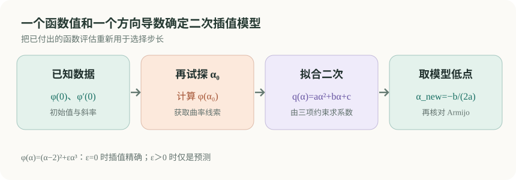

3.5.1 插值线搜索：从函数值估计下一个候选步
当一次试探步长没有达到充分下降，单纯把步长减半是一种安全选择；插值则利用已评估的函数值和初始斜率，预测曲线低谷可能在哪里。
最少需要哪些信息来构造二次模型
沿下降方向定义 φ(α)=f(x+αp)，其初始方向导数 d₀=φ′(0)＜0。已知 φ(0)、d₀ 和一次正试探 α₀ 的 φ(α₀)，就足以唯一决定一个二次插值模型 q(α)=aα²+d₀α+φ(0)。
插值二次系数为 a=[φ(α₀)−φ(0)−d₀α₀]/α₀²。若 a＞0，模型极小点位于 α_new=−d₀/(2a)。这仍是模型的极小点，真正的函数值与 Armijo 或 Wolfe 判据必须在 α_new 重新检查。
为什么插值有时精确，有时会有偏差
先取 φ(α)=(α−2)²。它本身就是二次函数，已知 φ(0)=4、φ′(0)=−4，并在 α₀=1 处计算 φ(1)=1。代入插值公式得到 α_new=2，与真实一维极小点完全一致。
现在引入一个非二次扰动 εα³：φ(α)=(α−2)²+εα³，且仍在 α₀=1 试探。此时 φ(0)=4、φ′(0)=−4、φ(1)=1+ε，因此 α_new=2/(1+ε)。
例如 ε=0.25 时，插值预测 α_new=1.6，但真正的驻点由 2(α−2)+0.75α²=0 给出 α*=4/3≈1.3333。插值改善了候选搜索，却不是一次就精确解出非二次函数。

为什么不能不加保护地相信插值结果
当二次模型曲率系数 a 接近零、为负，或因为浮点消去出现不稳定值时，公式可能给出极大、极小甚至负的候选步。工程实现一般要求候选点位于当前可接受区间的安全内段，过于接近边界则退回二分或几何缩小。
进一步利用相邻两点的 φ 和 φ′，可以构造三次插值，更好地反映曲率变化，但也增加实现与数值稳定性问题。是否使用三次插值通常与梯度评估成本有关。
如何区分模型更新与终止判据
插值策略解决“下一次试哪里”；Armijo 或 Wolfe 条件解决“本次是否可以接受”。一个正确的线搜索不能把插值器输出直接当作最终 α。
此处的多项式仅用来建立一维候选，不说明原目标函数的全局凸性，也不保证浮点条件下导数总是准确可用。
交互实验：改变非二次扰动，观察插值误差
固定初始斜率 φ′(0)=−4 和试探点 α₀=1，令 φ(α)=(α−2)²+εα³；调节 ε，比较二次插值候选与真正的驻点。
改变参数，观察数值判据
Python：独立计算与断言
用三个函数信息构建二次插值，解析对照三次扰动后的真实驻点，并检查候选方向的函数值。
"""Quadratic interpolation from phi(0), phi'(0), phi(alpha0)."""
from math import sqrt
def phi(alpha: float, eps: float):
return (alpha-2.0)**2 + eps*alpha**3
def candidate(alpha0: float, eps: float):
slope0 = -4.0
denom = 2.0*(phi(alpha0,eps)-phi(0.0,eps)-slope0*alpha0)
if alpha0 <= 0.0 or denom <= 1e-12:
raise ValueError("invalid interpolation curvature")
return -slope0*alpha0**2/denom
def optimum(eps: float):
if eps == 0.0:
return 2.0
return (-2.0 + sqrt(4.0 + 48.0*eps))/(6.0*eps)
if __name__ == "__main__":
assert candidate(1.0,0.0) == 2.0
a = candidate(1.0,0.25)
exact = optimum(0.25)
print("candidate:",a,"stationary point:",exact)
assert abs(a-1.6)<1e-12
assert abs(exact-4.0/3.0)<1e-12
assert phi(a,0.25)<phi(0.0,0.25)
assert abs(a-exact)>0.1自检：当 ε→0 时公式为什么回到 α=2？若插值二次系数为负，应如何拒绝这个候选？